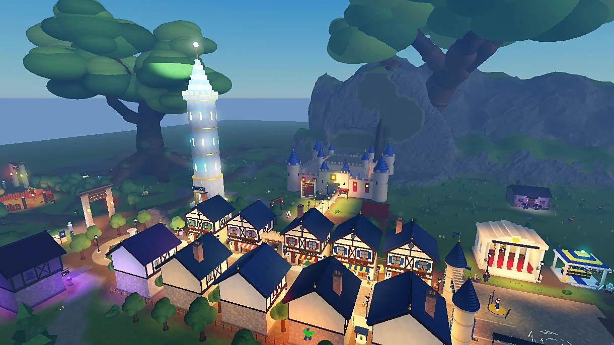
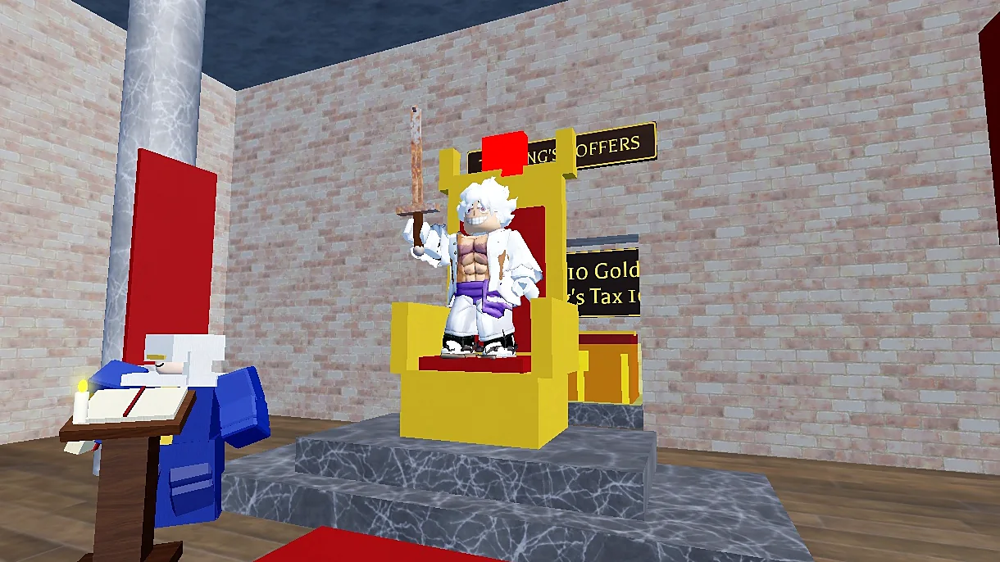

The Realm Opens: Welcome to King or Skum?
One throne, one crown, and a whole server of people who want it. Here's what you're walking into.

Every server of King or Skum? is its own little kingdom, and every kingdom is a race. You arrive in Lionsgate with a rusty sword, a hundred gold and no reputation at all. Somewhere in the same server, someone is wearing a crown. By the end of the night, it could be you.
How the crown works
The crown goes to whoever has the most renown. You earn renown by finishing quests, slaying monsters and toppling other players, especially royals. Your rank, from Skum all the way up to King, multiplies your stats: the King hits half again as hard as a regular adventurer, and the Skum hits a fifth less. Die, and your renown drops to zero. Staying alive is how you climb.
The King doesn't just get a hat. He taxes every coin that moves in the realm, and the tax climbs the longer he reigns. That gold piles up in the King's Coffers behind the throne, which makes the King the most valuable target on the server. Slay him and you plunder half his coffers and throw the realm into Anarchy: ten minutes of free-for-all, after which the most renowned adventurer is crowned.

Where to start
- Talk to Herald Bartholomew by the fountain. He knows everything, and he will tell you all of it.
- Head to Sunnybrook Farm. Chickens first, then cows, then goblins in Greenhollow Vale.
- Touch every waystone you find. Once attuned, you can travel to it from any other waystone, forever.
- Bank what you love. Death takes your gear. The Royal Bank doesn't let it.
Beyond the farm there's a whole realm waiting: werewolves in Moonfang Woods, a vampire count beneath his castle, raptors and a Tyrant Rex in Tikihana Jungle, storm titans on Stormcrown Peaks, a drowned city, and a dragon called Vyrthrax the Undying who has been asleep for a hundred years and is starting to wake up.
And there are secrets. We're not going to tell you what they are. We'll just say: be nice to the flowers. Mostly.
The crown is waiting.
King or Skum? is free to play on Roblox.